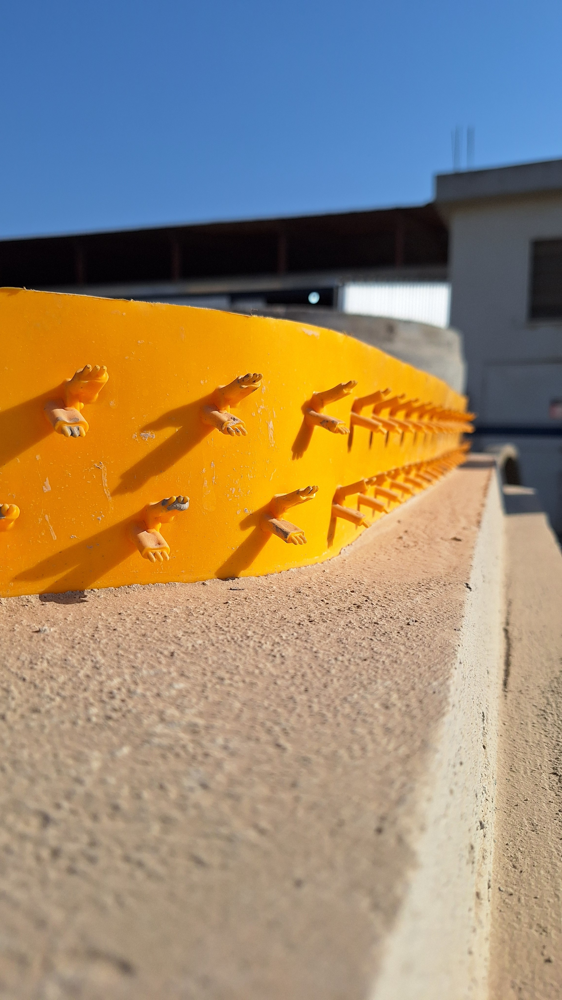
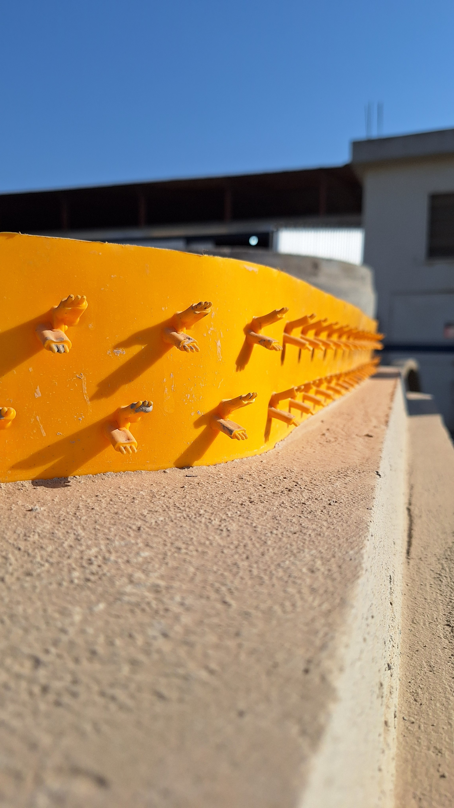
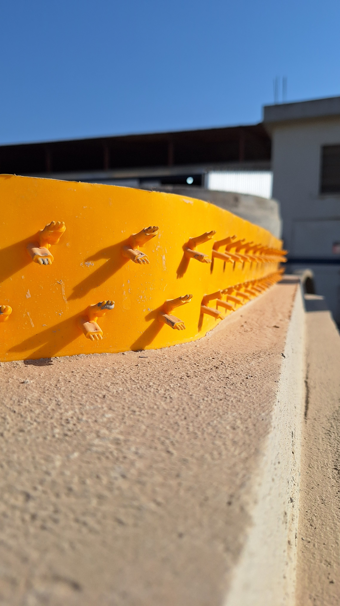

2. Propriedades Mecânicas
Força média de ancoragem: 1,355 kN/pino, equivalente a 582,7 kN/m² na densidade padrão de aplicação. Garante segurança sob pressão hidráulica e movimentações estruturais.
.png) 

O V-FIX foi submetido por 70 dias a reagentes agressivos (ácido sulfúrico, hipoclorito, detergentes, etc.) em temperatura ambiente e 60 °C. Manteve suas propriedades mecânicas dentro de margens seguras, com perda de massa inferior a 0,06%.
| Líquido | Along. Escoamento (%) | Along. Ruptura (%) | Tensão Escoamento (MPa) | Tensão Ruptura (MPa) |
|---|---|---|---|---|
| Condição Original | 14,2 | 58,72 | 19,28 | 10,99 |
| Hipoclorito de Sódio (1%) | 7,1 | 69,76 | 18 | 9,69 |
| Ácido Sulfúrico (20%) | 7,23 | 47,64 | 17,69 | 9,3 |
Manteve sua forma com variações inferiores a ±3%, mesmo após exposição prolongada a soluções químicas e temperatura.
Força média de ancoragem: 1,355 kN/pino, equivalente a 582,7 kN/m² na densidade padrão de aplicação. Garante segurança sob pressão hidráulica e movimentações estruturais.
